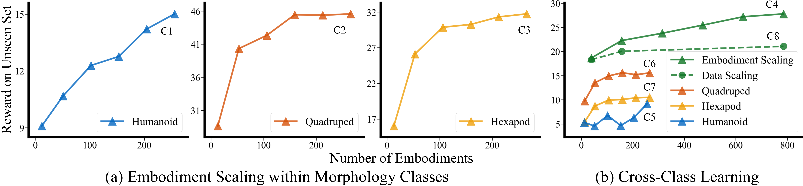

Towards Embodiment Scaling Laws in Robot Locomotion
*Equal contribution
1University of California San Diego, USA
2Hillbot Inc, USA
3Cornell University, USA
4Technical University of Darmstadt, Germany
5German Research Center for AI (DFKI); Robotics Institute Germany; hessian.AI, Germany
TLDR: We train a single locomotion policy on ~1,000 procedurally generated robots and uncover embodiment scaling laws that enable generalization to diverse embodiments in simulation and the real world.
Overview
This work investigates embodiment scaling laws in robotics, hypothesizing that training a single control policy on a larger number of diverse robot embodiments improves its ability to generalize to unseen ones.
Generating 1000 Robots
To study the effects of embodiment scaling, we procedurally generate GENBOT-1K dataset consisting if approximately 1,000 varied robot embodiments, including humanoids, quadrupeds, and hexapods, with different geometry, topology, and kinematics.
Variations:
Topology
Geometry
Kinematics
Humanoid


Quadruped


Hexapod


Embodiment Scaling Laws
Training generalist locomotion policies on subsets of GENBOT-1K shows that generalization to unseen robots improves steadily as the number of training embodiments increases.
Real-world Deployment
We confirm our results, by zero-shot transferring the learned unified policy to the Unitree Go2 quadruped and the Unitree H1 humanoid robots in the real world.
Unitree H1
Forward
Forward
Forward
Backward
Backward
Backward
Sideward
Sideward
Sideward
Pushes
Pushes
Pushes
Unitree Go2
100% joint limits on every knee
60% joint limits on right rear knee
20% joint limits on right rear knee
60% joint limits on front left knee
40% joint limits on front left knee
20% joint limits on front left knee
Gravel
Grass
Grass
Pavement
Pavement
Cobblestone
Acknowledgments
This research is funded by the NSF AI-Center TILOS, the Hillbot Embodied AI Fund, the National Science
Centre Poland (Weave programme UMO-2021/43/I/ST6/02711), and by the German Science Foundation (DFG)
(grant number PE 2315/17-1).
Co-author Hao Su is the CTO for Hillbot and receives income. The terms of this arrangement have been
reviewed and approved by the University of California, San Diego, in accordance with its conflict of
interest policies.
We thank the German Research Center for AI (DFKI), Research Department: Systems AI for Robot Learning,
for lending the Unitree Go2 and Unitree H1 robots.
Finally, we thank Oleg Kaidanov (DFKI, TU Darmstadt) for his continuous help with the real-world
robot deployment.
Citation
@misc{ai2025embodimentscalinglaws,
title={Towards Embodiment Scaling Laws in Robot Locomotion},
author={Bo Ai and Liu Dai and Nico Bohlinger and Dichen Li and Tongzhou Mu and Zhanxin Wu and K. Fay and Henrik I. Christensen and Jan Peters and Hao Su},
year={2025},
eprint={2505.05753},
archivePrefix={arXiv},
primaryClass={cs.RO},
url={https://arxiv.org/abs/2505.05753},
}This website was inspired by Kevin Zakka's and Brent Yi's and builds on Nico Bohlinger's.
Paper
Talk